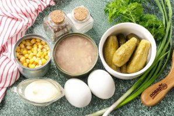
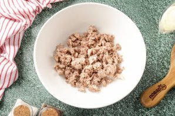
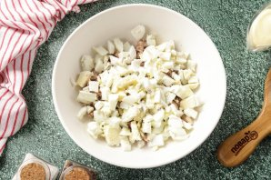
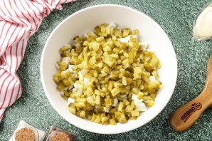

Подготовьте все ингредиенты по списку. Яйца желательно заранее отварить и дать им остыть.

Из банки с тунцом слейте масло и разомните его вилкой. У меня была баночка с уже рубленым тунцом, которого я просто откинула на сито. Переложите рыбу в глубокую миску или сразу в салатник.

Яйца очистите и нарежьте кубиками.

Огурцы так же нарежьте небольшими кубиками и слегка отожмите от лишней жидкости.
Добавьте консервированную кукурузу.
Зелень промойте, обсушите и порубите ножом. У меня петрушка и зеленый лук. Заправьте салат майонезом, посолите и поперчите по вкусу.
Тщательно перемешайте. Салат с тунцом, огурцами и кукурузой готов.
Подавайте салат сразу к столу. Приятного аппетита!